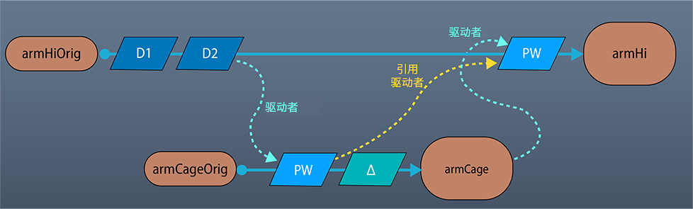
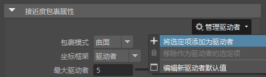
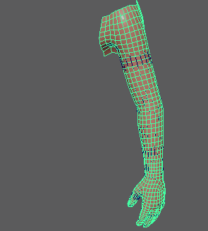

可以使用
接近度包裹变形器作为 proxNet 变形器，使变形驱动者几何体相对于驱动者的其他变形版本应用其影响，而不是相对于其原始的未变形形状。

工作流：armCage 几何体使用引用驱动者使 armHi 几何体变形
例如，使用接近度包裹变形器，由高分辨率几何体使框架几何体变形。然后，再次使用接近度包裹变形器，由该框架几何体本身使高分辨率几何体变形，但使用变形后的框架作为参考，以避免双重变形。
- 将接近度包裹变形器添加到 armCage。（请参见创建接近度包裹变形器。）
- 在属性编辑器(Attribute Editor) (Ctrl+A) 中，打开“proximityWrap1”选项卡并将其固定。
- 选择“armHi”，然后在“属性编辑器”(Attribute Editor)的“proximityWrap1”选项卡的“管理驱动者”(Manage Drivers)菜单中，添加“armHi”作为驱动者。

现在，
“armCage”将使用
“armHi”进行变形。

- 取消固定“属性编辑器”(Attribute Editor)，选择“armHi”，然后向其添加“接近度包裹”(Proximity Wrap)变形器。
- 固定“属性编辑器”(Attribute Editor)的“proximityWrap2”选项卡，然后在“管理驱动者”(Manage Drivers)菜单中添加“armCage”作为驱动者。
没有明显的更改，但现在“armCage”用作“armHi”的引用驱动者。
- 修改“armCage”。所做更改将传递到“armHi”。